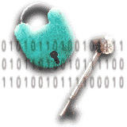

|
About pyDES
This is a pure python implementation of the DES encryption algorithm.
It is in pure python to avoid portability issues, since most DES
implementations are programmed in C (for performance reasons).
Triple DES class is also implemented, utilising the DES base. Triple DES
is either DES-EDE3 with a 24 byte key, or DES-EDE2 with a 16 byte key.
See the "About triple DES" section below more info on this algorithm.
The code below is not written for speed or performance, so not for those
needing a fast des implementation, but rather a handy portable solution ideal
for small usage. It takes my AMD2000+ machine 1 second per 2.5 kilobyte to
encrypt or decrypt using the DES method. That is extremely SLOW!!
About triple DES
Triple DES is just running the DES algorithm 3 times over the data with the
specified key. The supplied key is split up into 3 parts, each part being 8
bytes long (the mandatory key size for DES).
The triple DES algorithm uses the DES-EDE3 method when a 24 byte key is
supplied. This means there are three DES operations in the sequence
encrypt-decrypt-encrypt with the three different keys. The first key will be
bytes 1 to 8, the second key bytes 9 to 16 and the third key bytes 17 to 24.
If a 16 byte key is supplied instead, the triple DES method used will be
DES-EDE2. This means there are three DES operations in the sequence
encrypt-decrypt-encrypt, but the first and third operations use the same key.
The first/third key will be bytes 1 to 8 and the second key bytes 9 to 16.
Credits
Thanks go to:
- David Broadwell for his ideas, comments and suggestions.
- Mario Wolff for finding errors in triple des CBC.
- Santiago Palladino for providing the PKCS5 padding technique.
- Shaya for correcting the PAD_PKCS5 triple des CBC errors.
- Yoav Aner for spotting a triple des CBC IV error.
Installation
- Extract the files from the pyDes archive.
- Run the following command: python setup.py install
- To test, run: python test_pydes.py
Note: On Unix, you'd run this command from a shell prompt; on Windows, you
have to open a command prompt window (``DOS box'') and do it there;
pyDes Usage
Class initialization
--------------------
pyDes.des(key, [mode], [IV], [pad], [padmode])
pyDes.triple_des(key, [mode], [IV], [pad], [padmode])
key -> Bytes containing the encryption key. 8 bytes for DES, 16 or 24 bytes
for Triple DES
mode -> Optional argument for encryption type, can be either
pyDes.ECB (Electronic Code Book) or pyDes.CBC (Cypher Block Chaining)
IV -> Optional Initial Value bytes, must be supplied if using CBC mode.
Length must be 8 bytes.
pad -> Optional argument, set the pad character (PAD_NORMAL) to use during
all encrypt/decrpt operations done with this instance.
padmode -> Optional argument, set the padding mode (PAD_NORMAL or PAD_PKCS5)
to use during all encrypt/decrpt operations done with this instance.
I recommend to use PAD_PKCS5 padding, as then you never need to worry about any
padding issues, as the padding can be removed unambiguously upon decrypting
data that was encrypted using PAD_PKCS5 padmode.
Common methods
--------------
encrypt(data, [pad], [padmode])
decrypt(data, [pad], [padmode])
data -> Bytes to be encrypted/decrypted
pad -> Optional argument. Only when using padmode of PAD_NORMAL. For
encryption, adds this characters to the end of the data block when
data is not a multiple of 8 bytes. For decryption, will remove the
trailing characters that match this pad character from the last 8
bytes of the unencrypted data block.
padmode -> Optional argument, set the padding mode, must be one of PAD_NORMAL
or PAD_PKCS5). Defaults to PAD_NORMAL.
Example
-------
from pyDes import *
# For Python3, you'll need to use bytes, i.e.:
# data = b"Please encrypt my data"
# k = des(b"DESCRYPT", CBC, b"\0\0\0\0\0\0\0\0", pad=None, padmode=PAD_PKCS5)
data = "Please encrypt my data"
k = des("DESCRYPT", CBC, "\0\0\0\0\0\0\0\0", pad=None, padmode=PAD_PKCS5)
d = k.encrypt(data)
print "Encrypted: %r" % d
print "Decrypted: %r" % k.decrypt(d)
assert k.decrypt(d, padmode=PAD_PKCS5) == data
See the module source (pyDes.py) for more examples of use.
You can slo run the pyDes.py file without and arguments to see a simple test.
Note: This code was not written for high-end systems needing a fast
implementation, but rather a handy portable solution with small usage.
Older pyDES versions
Download (Windows): pyDes-2.0.0.zip
Download (Unix): pyDes-2.0.0.tar.gz
Download (Windows): pyDes-1.3.1.zip
Download (Unix): pyDes-1.3.1.tar.gz
Download (Windows): pyDes-1.3.zip
Download (Unix): pyDes-1.3.tar.gz
Download (Windows): pyDes-1.2.zip
Download (Unix): pyDes-1.2.tar.gz
Download (Windows): pyDes-1.1.zip
Download (Unix): pyDes-1.1.tar.gz
|